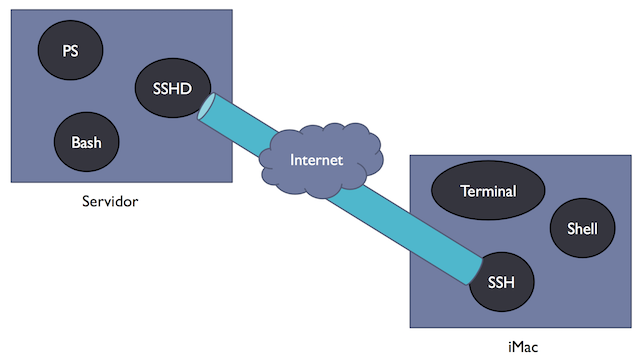

Shields programmers from the complexity of the hardware
Provides users with command line (CLI) and graphical (GUI) interfaces
The UNIX Operating System
Written by Ken Thompson and Dennis Ritchie at AT&T Bell Labs in 1972
Was the first widely-used portable operating system
Allows access by multiple users (Multiuser)
Concurrently performs multiple tasks (Multitask)
Two major versions from which all others derive, System V from AT&T and BSD from the University of Berkeley
IEEE developed a standard for UNIX called POSIX to make it possible to write programs that could run on any UNIX system
The Free Software Foundation
In the 70s, programmers used to share their code freely among each other.
In the 80s, a new trend emerged where companies developing the code refused to share it with their clients
In response to this trend, Richard Stallman (RMS) formed the Free Software Foundation (FSF).
The plan was to develop a free OS called GNU, which would be compatible with the proprietary Unix operating systems
GNU OS
The components required for kernel development were written first: an editor (emacs), a C compiler (gcc), a shell (bash), libraries and all associated generic Unix tools.
The GNU kernel is called Hurd and it uses a revolutionary server–client architecture built on top of a microkernel.
The Hurd is still not considered suitable for production environments as of today...
Linux Torvalds
GNU/Linux
The Linux kernel became the most popular adoption of the GNU software.
A number of distributors provided a complete OS by putting together the Linux kernel, GNU tools and libraries, package managers, installers and other applications.
Nowadays Linux is pretty much everywhere: computers, smartphones, cars and embedded devices. It basically powers the world...
BSD Family
Berkeley Software Distribution (BSD) is a Unix operating system derivative developed and distributed by the University of Berkeley
BSD has been the base of a large number of operating systems:
FreeBSD - Known for its performance and rock solid stability
OpenBSD - Known for being the most secure operating system
NetBSD - Known for being the most portable operating system
Darwin - FreeBSD fork and the base for Apple's OSX, iOS, watchOS and tvOS
Unix Family Tree
Operating System Overview
Consists of:
Kernel
Libraries and Utilities
Performs:
Device management
Filesystem management
Process management
Memory management
Filesystem
Defines the structure and the rules used to read, write and maintain data on a disk.
Application software usually does not write directly to disk, but goes through the OS filesystem calls
Common file system types include:
Ext2 - Linux filesystems
Ext3/Ext4 - Linux filesystem with journaling capabilities
HFS/HFS+/AFS - Filesystems used by Apple computers
FAT12/16/32 - Simple legacy filesystems developed by Microsoft
NTFS - Proprietary Microsoft filesystem
Filesystem Hierarchy
The Filesystem Hierarchy Standard (FHS) defines the directory structure and directory contents in Unix-like operating systems
Different Operating Systems follow this standard to different levels of compliance
Processes and Threads
A process is a program in execution in memory. Any program executed creates a process. A program can be a command, a shell script, or any binary executable or any application.
A thread is a sequence of instructions and a lightweight alternative to processes. Threads within the same process share the same memory address space.
Scheduler
The Scheduler is an operating system module that selects and allocates CPU time to processes in memory that are ready to execute
The Scheduling algorithms can be divided into two categories:
Nonpreemptive Scheduling - once a process has been given the CPU, the CPU cannot be taken away from that process and it has to voluntarily give the CPU back to the OS
Preemptive Scheduling - once a process has been given the CPU, the OS can take it back at any time
Preemptive scheduling is commonly used in real-time operating systems, such as VxWorks, QNX, Montavista Linux Symbian and many others.
They are quite popular in audio, video and telecommunication applications
Interprocess Communication
Processes frequently need to communicate with other processes.
Sure, we can use Files, but it is slow and may require file locks.
Such functionality is better provided by the kernel with IPC mechanisms:
Message Queues - message exchange between processes
Semaphores - synchronization between processes
Signals - notification mechanism between processes
Pipes/Sockets - connect streams of data
Shared Memory - fast exchange of data between processes
{ Hands On }
Check Running Processes
Secure Shell Connection
Cryptographic network protocol that allows remote login. Authenticate on a remote machine and run commands remotely, as if we were there!
ssh - Authenticate using SSH protocol
scp - Copy files using SSH protocol
Asymmetric cryptography for usage without passwords
{ Hands On }
Remote Processes

Memory Management
Physical Memory is the amount of RAM available to the OS
Virtual Memory is a combination of RAM and disk space that running processes can use. Virtual memory makes the system appear to have more memory than it actually has by sharing it between competing processes as they need it.
Swap space is the portion of virtual memory that is on the hard disk, used when RAM is full


 Nowadays Linux is pretty much everywhere: computers, smartphones, cars and embedded devices.
Nowadays Linux is pretty much everywhere: computers, smartphones, cars and embedded devices.